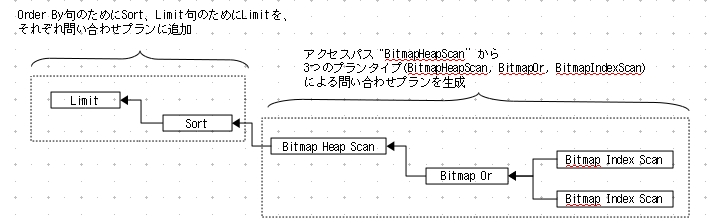
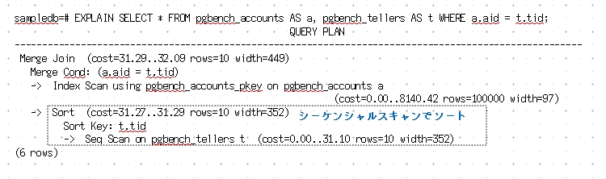

プラン処理
プラン処理について説明します。
はじめに概略を述べ、いくつかのキーワードを説明します。その後、順を追って詳細に解説します。
[<図2-07>](1)に単一テーブルのプラン処理フローを示します。
 |
PostgreSQLのプラン処理はコストベースです。
問い合わせツリーを受け取ったプランナは、
対象となるテーブル毎にRelOptInfoというデータ構造のノードを準備します。
ここではテーブルは一つなので、対応するRelOptInfoも一つです。
RelOptInfoにはテーブルの検索手段毎にコストを推定して保存します。
コスト計算のための最小単位を「アクセスパス」、または単に「パス」と呼びます。
パスはプランナ内部でのみ利用します。
[<表2-03>]にバージョン9.1のパスの一覧を示します。
|
| ||||||||||||||||||||||||||||||||||||||||||||
生成可能なパスから最小コストのパスを選び、それを基にエクゼキュータが利用する「問い合わせプラン」を生成します。
問い合わせプランは「プランタイプ」を単位とする木構造で、エクゼキュータはその木構造を辿りながらプランタイプに
対応した関数を実行します。
[<図2-07>](2)に、LIMIT句とORDER BY句を含むSELECT文について、パス(この場合SeqScan)と生成される問い合わせプランを図示します。
パスとプランタイプは一対一に対応するわけではありません。
(前記のように)パスはコスト計算のための内部情報であり、プランタイプはエクゼキュータが実際にデータ処理するための具体的な手順です。
[<表2-04>]にバージョン9.1のプランタイプの一覧を示します。
|
| ||||||||||||||||||||||||||||||||||||||||||||||||||||||||||||||||||||||
複数テーブルのプラン処理の場合、テーブル毎にRelOptInfoを準備し、さらにテーブル結合毎にRelOptInfoを準備します([<図2-07>](3)参照)。 テーブルの結合毎にパスツリーを作り、 最終的にコスト最小のパスツリーを選んで問い合わせプランを生成します。
以下、詳細にプラン処理を解説します。
最初に、
単一テーブルの問い合わせプランを生成する過程を辿りながら、PostgreSQLのプラン処理を説明します。
次に複数テーブルの結合について、
PostgreSQLがサポートする３種類のテーブル結合方式を解説した後、
２テーブルと３テーブルのプラン生成を具体的に説明します。
単一テーブルの問い合わせプラン生成
単一テーブルのプラン処理のフローを詳細に説明します。
[1] 前処理
最適なパスを求める前に、問い合わせツリーにいくつかの前処理を施します。 "2+2"を"4"に展開する、"NOT (NOT a)"を"a"とするなど論理式を正規化するような簡単なものから、 サブクエリの最適化のように大規模なものまで、多くの前処理があります。
例えば次のサブクエリは、テーブル結合形式に変更すれば検索効率が良くなります(実際は問い合わせツリーに変更を施す)。
SELECT tbl1.col FROM tbl1 WHERE col IN (SELECT col FROM tbl2) ↓ SELECT tbl1.col FROM tbl1, tabl2 WHERE tbl1.col = tbl2.col;
[2] 可能なテーブルスキャン方式のコストを計算
テーブルのスキャン方式にはシーケンシャルスキャン(SeqScan)、インデックススキャン(IndexScan)、ビットマップスキャン(BitmapScan)、
およびTidスキャン(TidScan)があります。
テーブルスキャン方式毎にWHERE句の条件を考慮してコストを推定し、その方式とコストをパスとして保存します。
以下、各スキャン方式とパスについて説明します。シーケンシャルスキャンとインデックススキャンは具体的なコスト推定式も示します。
シーケンシャルスキャン(SeqScan)
シーケンシャルスキャンのコストを推定します。
PostgreSQL内部では２つのコスト：初期コスト(startup cost)と総コスト(total cost)を保持しています。
初期コストは並べ替えなどの事前処理のコスト、総コストは初期コストに実際の処理コスト(run cost)を加えたものです(total cost = startup cost + run cost)。
EXPLAIN文はこの2種類のコストを常に表示します。
シーケンシャルスキャンは対象となるテーブルのレコードをすべて読み出します。初期コストは0で、総コストはそのテーブルのサイズに比例します。
以下に正確なコスト計算式を示します。コストはHDDからデータを読み出すI/Oコストと、CPU処理に必要なコストから推定します。
SeqScanのコスト = (DISK I/Oコスト)
+ (CPUコスト)
= (デーブル全ページ数 * seq_page_cost)
+ (テーブル全レコード数 * (cpu_tuple_cost + cpu_operator_cost))
ここで、"テーブル全ページ数"はシステムカタログpg_classのrelpages、"テーブル全レコード数"はreltuplesを使います。
インデックススキャン(Index Scan)
次にインデックスを使った場合のコストを推定します。そのテーブルにインデックスが張ってない場合やインデックスを使った検索式がWHERE句に無い場合、この部分はスキップします。
インデックススキャンのコスト計算はインデックス毎に行います。条件式が複数あればその数だけコスト計算を行います。つまり、インデックスと条件式の組み合わせでコスト計算を繰り返し、最小コストの組み合わせをパスとして保存することになります。
インデックススキャンのコスト計算の概略を示します。
インデックススキャンはインデックステーブルから検索対象となるタプルの位置を求め、それを基にテーブルからタプルを読み出します。
初期コストは0で、総コストはインデックステーブルへのアクセスコストとテーブルへのアクセスコストの和になります。
以下に正確なコスト計算式を示します。
IndexScanのコスト = (インデックスI/Oコスト+テーブルI/Oコスト)
+ (インデックスCPUコスト+テーブルCPUコスト)
= (必要ページ数*sequential_page_cost + 必要レコード数*Const)
+ (必要レコード数*cpu_index_tuple_cost + 必要レコード数*cpu_tuple_cost)
必要ページ数や必要レコード数はWHERE句に記述する検索条件式に依存します。
これらのコストの推定は選択度(Selectivity)を使います。選択度については[<コラム2-3>]を参照してください。
必要レコード数を例にとれば「必要レコード数 = 選択度 × テーブルレコード数」です。
なお、必要レコード数はEXPLAIN文のrowに表示されています。
| コラム2-3:選択度 |
選択度は統計情報pg_statsのMCV(Most Common Value)、もしくはヒストグラムから求めます。 ここでMCVとはカーディナリティ(Cardinality)の代表的なものと考えてください。
most_common_valueとmost_common_freqがわかる場合はそれを使います。
sampledb=# SELECT most_common_vals,most_common_freqs,histogram_bounds FROM pg_stats
sampledb-# WHERE schemaname = 'public' AND tablename = 'pref' AND attname = 'prefname';
most_common_vals | {東京都,神奈川県,埼玉県,千葉県,静岡県,茨城県,新潟県,宮城県,長野県,福島県,
群馬県,栃木県,三重県,青森県,岩手県,山形県,石川県,富山県,秋田県,山梨県}
most_common_freqs | {0.202028,0.138885,0.110462,0.0954064,0.0577662,0.0454755,0.0364111,
0.0359502,0.0330312,0.031034,0.0307267,0.0307267,0.0284222,0.0210478,0.0204332,0.0178215,
0.0178215,0.016746,0.0165924,0.0132125}
histogram_bounds |
most_common_valsとmost_common_freqsは対になっており、 例えば"東京都"の出現頻度は0.202028=20.2%、"神奈川県"の出現頻度は0.138885=13.9%、などです。よってWHERE句に"prefname='神奈川県'"があれば、選択度は0.1388..となります。
カーディナリティが大きすぎてmost_common_valueが求められない場合や、範囲検索の場合はhistogram_boundsを利用します。
sampledb=# SELECT histogram_bounds FROM pg_stats
sampledb-# WHERE schemaname = 'public' AND tablename = 'pgbench_accounts' AND attname = 'aid';
histogram_bounds | {4,1055,2082,3020,4001,4992,5952,6957,7909,8900,9950,10886,11867,12968,13942,
14898,15879,16878,17877,18789,19770,20781,21794,22743,23720,24763,25795,26853,27899,28908,29949,
... 略 ...
85218,86213,87202,88144,89142,90133,91169,92181,93141,94149,95092,96085,97078,98104,99024,100000}
例えば、範囲検索で"WHERE aid BETWEEN 1000 TO 2000"ならば、histogram_boundsの分布から補間して計算することで、おおよそ全体の1%程度のデータが対象になると推測できます。 |
ビットマップスキャン(Bitmap Scan)
ビットマップスキャンが使える条件式がある場合は、そのコスト計算も行います。 コスト計算式は繁雑なので本書では省略します。
バージョン8,1からサポートされたビットマップスキャンは、
検索条件からインデックスのビットマップを生成し、それをスキャンすることで効率的なテーブル検索を行います。
ビットマップどうしの論理演算もサポートしているので、
条件式をORで結合した場合でもインデックスの利用が期待できます。
[<図2-08>]にビットマップスキャンの例を示します([<脚注5>])。
脚注5 これはEXPLAINの出力である問い合わせプランの図式化です。図中の"Bitmap Heap Scan"、"BitmapOr"、"Bitmap Index Scan"はパスでなくプランタイプです。 実際、"Bitmap Index Scan"というパスはありません。
|
|
[<図2-08>]はインデックスaidの２つの検索条件をORで結合した場合の、ビットマップスキャンによる検索を示した図です。
はじめに対象テーブルのTid毎に1[bit]を割り当てたビットマップを生成します。条件式が２つあればビットマップも２つ用意します。条件式毎に、その条件を満たすTidに対応するビットに'1'を設定します。
次にビットマップ同士の論理演算を行います。ここではOR演算を行います。これは非常に高速に実行できます。
最後にビットマップをスキャンしながら、'1'が設定されたTidをテーブルデータから読み出します。
ビットマップ生成の初期コストが必要ですが、検索範囲によってはシーケンシャルスキャンよりも非常に高速に検索できます。
TIDスキャン(tidscan)
TIDで直接ページをアクセスする場合のコストを計算します。 WHERE句にTIDを使った条件式がなければ、この部分はスキップします。
コラム2-4:パス生成関数とコスト推定関数 上で説明したスキャン方式について、実際にパスを生成する関数、およびコスト推定する関数の一覧を示します。
スキャン方式 パス生成関数 コスト推定関数 シーケンシャルスキャン create_seqscan_path() cost_seqscan() インデックススキャン create_index_paths() cost_index() ビットマップスキャン create_bitmap_heap_path()
create_bitmap_and_path()
create_bitmap_or_path()cost_bitmap_heap_scan()
cost_bitmap_and_node()
cost_bitmap_or_node()Tidスキャン create_tidscan_path() cost_tidscan() パス生成関数はcreate_index_paths()がsrc/backend/optimizer/path/idxpath.c、それ以外はsrc/backend/optimizer/util/pathnode.cで定義されています。
コスト推定関数はsrc/backend/optimizer/path/costsize.cで定義されています。
[3] 最小コストのパスから実行プランを生成
パスとコストは、リレーション(この場合はテーブル)毎に 構造体RelOptInfo ([<脚注6>])で定義されたデータ内に保存します。
脚注6 構造体RelOptInfoの定義はsrc/include/nodes/relation.h。
PostgreSQLを"-DOPTIMIZER_DEBUG"付きでコンパイルすると、RelOptInfoに保存されたアクセスパスを実行ログに表示できます。
以下、具体例を通して、パスから実行プラン生成について簡単に説明します。
[例１]
次のSELECT文のプラン処理で、テーブルスキャンのパスとコストを求めた後の、RelOptInfoの内容を表示します。
SELECT * FROM pgbench_accounts WHERE (aid BETWEEN 1 AND 10);[< RELOPTINFOの内容>]RELOPTINFO (1): rows=8 width=97 baserestrictinfo: pgbench_accounts.aid >= 1, pgbench_accounts.aid <= 10 path list: IdxScan(1) rows=8 cost=0.00..24.07 cheapest startup path: IdxScan(1) rows=8 cost=0.00..24.07 cheapest total path: IdxScan(1) rows=8 cost=0.00..24.07"path list"はIdxScanのみ保存しています。
RelOptInfo内部では、初期化コストが最も少ないパス(cheapest startup path)と総コストが最も少ないパス(cheapest total path)も明示的に保持しています。次に、パスから問い合わせプランを生成します。
この例ではコスト最小のインデックススキャン(IdxScan)から、問い合わせプランを生成します。生成された問い合わせプランをEXPLAIN文で表示すると以下のようになります。
sampledb=# EXPLAIN SELECT * FROM pgbench_accounts WHERE (aid BETWEEN 1 AND 10); QUERY PLAN ---------------------------------------------------------------------------------------------- Index Scan using pgbench_accounts_pkey on pgbench_accounts (cost=0.00..24.07 rows=8 width=97) Index Cond: ((aid >= 1) AND (aid <= 10)) (2 rows)この問い合わせプランの推定コストは初期コストが"0.0"、総コストが"24.07"です。
[例２]
[例１]より複雑な例を示します。このSELECT文はORDER BY句とLIMIT句があり、さらに２つの条件式をORで結合しています。
SELECT * FROM pgbench_accounts WHERE ((aid BETWEEN 1 AND 1000) OR (aid BETWEEN 5000 AND 6000)) ORDER BY bid LIMIT 100;生成可能なパスとコストを求めた後のRelOptInfoを示します。
[< RELOPTINFOの内容>]RELOPTINFO (1): rows=1945 width=97 baserestrictinfo: unknown expr path list: BitmapHeapScan(1) rows=1945 cost=57.05..2052.15 SeqScan(1) rows=1945 cost=0.00..3883.00 cheapest startup path: SeqScan(1) rows=1945 cost=0.00..3883.00 cheapest total path: BitmapHeapScan(1) rows=1945 cost=57.05..2052.15この例では、パスとしてビットマップスキャン(BitmapHeapScan)とシーケンシャルスキャン(SeqScan)を保存しています。
ORDER BYによる並べ替えのコストも考慮し、 最終的にコスト最小となるパスを選んで、そこから問い合わせプランを生成します。
sampledb=# EXPLAIN SELECT * FROM pgbench_accounts sampledb-# WHERE ((aid BETWEEN 1 AND 1000) OR (aid BETWEEN 5000 AND 6000)) sampledb-# ORDER BY bid LIMIT 100; QUERY PLAN ----------------------------------------------------------------------------------------------- Limit (cost=2126.48..2126.73 rows=100 width=97) -> Sort (cost=2126.48..2131.35 rows=1945 width=97) Sort Key: bid -> Bitmap Heap Scan on pgbench_accounts (cost=57.05..2052.15 rows=1945 width=97) Recheck Cond: (((aid >= 1) AND (aid <= 1000)) OR ((aid >= 5000) AND (aid <= 6000))) -> BitmapOr (cost=57.05..57.05 rows=1955 width=0) -> Bitmap Index Scan on pgbench_accounts_pkey (cost=0.00..25.61 rows=934 width=0) Index Cond: ((aid >= 1) AND (aid <= 1000)) -> Bitmap Index Scan on pgbench_accounts_pkey (cost=0.00..30.48 rows=1021 width=0) Index Cond: ((aid >= 5000) AND (aid <= 6000)) (10 rows)冗長になりますが、EXPLAIN文の出力を図解します([<図2-09>])。
[<図2-09>]問い合わせプランの例 
RelOptInfoに保存されたパスBitmapHeapScanから、プランタイプBitmapIndexScan、BitmapOr、BitmapHeapScanによる問い合わせプランを生成します。 また、ORDER BY句とLIMIT句を処理するためにプランタイプSort([<コラム2-5>])とLimitを追加します。
エグゼキュータは、プランナが生成した問い合わせプランをもとに問い合わせを実行します。
[例１]の問い合わせプランを受け取ったエクゼキュータは、プランタイプIndexScanに対応した関数ExecIndexScan()を実行します。
[例２]では、エクゼキュータは問い合わせプランを末尾から読み取り、プランタイプに対応した関数を実行します。
例えばBitmapIndexScanならnodeBitmapIndexScan.cで定義された各種関数、BitmapOrならnodeBitmapOr.cで定義された各種関数などです。
これらの関数はsrc/backend/executor/以下にすべて定義されています。
| コラム2-5:プランタイプSort |
テーブルスキャンの後にSort処理が必要な場合があります。 文字通りORDER BY句による並べ替え以外にも、 グループ化(GROUP BY)や重複の削除(DISTINCT)など、Sort処理を必要とするプランタイプがあります。 また、マージソート結合で並べ替えが必要になる場合もあります。 実際の並べ替え処理はpostgresプロセスのwork_mem上で行います。 よって、work_memで処理できるデータ量か否かで処理方式もコストも異なります。
work_mem上で処理する場合はクイックソート、
HDDとwork_memを使う場合はマージソートで、それぞれ並べ替えします。
startup_cost = 2.0 * cpu_operator_cost * tuples * LOG2(2.0 * output_tuples) run_cost = cpu_operator_cost * tuples |
複数テーブルの結合による問い合わせプラン生成
複数のテーブルを結合した問い合わせプランの求め方を説明します。
はじめに、テーブルの結合方式について説明します。
次に、例を使って問い合わせプランの求め方を説明します。
検索結果の結合は[<コラム2-6>]を参照してください。
| コラム2-6:検索結果の結合 |
INTERSECTやEXCEPTなど、SELECT文の検索結果の結合はプランタイプAppendとSetOpが実行します。
sampledb=# EXPLAIN SELECT aid,bid FROM pgbench_accounts INTERSECT SELECT aid,bid
sampledb-# FROM pgbench_history;
QUERY PLAN
-----------------------------------------------------------------------------------------
SetOp Intersect (cost=48555.87..51237.71 rows=74406 width=8)
-> Sort (cost=48555.87..49449.82 rows=357578 width=8)
Sort Key: "*SELECT* 2".aid, "*SELECT* 2".bid
-> Append (cost=0.00..10683.56 rows=357578 width=8)
-> Subquery Scan on "*SELECT* 2" (cost=0.00..6800.56 rows=257578 width=8)
-> Seq Scan on pgbench_history (cost=0.00..4224.78 rows=257578 width=8)
-> Subquery Scan on "*SELECT* 1" (cost=0.00..3883.00 rows=100000 width=8)
-> Seq Scan on pgbench_accounts (cost=0.00..2883.00 rows=100000 width=8)
(8 rows)
|
テーブル結合方式
PostgreSQLがサポートするテーブルの結合方式は次の３つです。
- ネステッドループ結合(nested loop join)
- マージソート結合(merge join)
- ハッシュ結合(hash join)
以下、順に説明します。
ネステッドループ結合(Nested Loop Join)
ネステッドループ結合は最も単純な結合方式で、 外側テーブルを1レコードづつ取り出し、その都度内側テーブルの全レコードとマッチングします([<図2-10>])。 初期コストは0、総コストは結合するテーブルレコード数の積に比例します(O(M × N))。
|
|
ネステッドループ結合による問い合わせプランを示します。
sampledb=# EXPLAIN SELECT * FROM pgbench_accounts AS a, pgbench_branches AS b;
QUERY PLAN
---------------------------------------------------------------------------------
Nested Loop (cost=0.00..3894.01 rows=100000 width=461)
-> Seq Scan on pgbench_branches b (cost=0.00..11.01 rows=1 width=364)
-> Seq Scan on pgbench_accounts a (cost=0.00..2883.00 rows=100000 width=97)
(3 rows)
マージソート結合(Merge Join)
マージソート結合はソート済みのテーブル同士を結合します([<図2-11>])。 予めソートしているので、外側テーブルは内側テーブルの一部だけスキャンし、次の結合では直前に取り出したタプルの次からスキャンします。
|
|
マージソート結合の初期コストはソート処理です。
インデックスをキーとする結合条件であればインデックススキャンすればよいので、ソートは不要です([<脚注7>])。
Merge Joinの実行コストは、ソートと比較のコストの和です。
両テーブルともソートが必要なら実行コストのオーダはソートが支配的です(O(MlogM + NlogN))。
例えばテーブルNのみソートするなら実行コストのオーダはO(M+NlogN)となります。
ソートが不要なら実行コストは各テーブルのレコード数の和に比例します(O(M+N))。
脚注7 バージョン8.2以前はインデックスの有無に関係無く、必ずソートを行っていました。
次の例は、内側テーブルpgbench_tellersをソートし、外側テーブルpgbench_accountsをインデックススキャンしながら、ソート済みの内側テーブルを必要なタプルのみ結合していくものです。
編集用のデータ。書籍では以下の図で示したように、 下部を点線長方形で囲み、青字で文章「シーケンシャルスキャンでソート」を入れる 。
sampledb=# EXPLAIN SELECT * FROM pgbench_accounts AS a, pgbench_tellers AS t WHERE a.aid = t.tid;
QUERY PLAN
-------------------------------------------------------------------------------------------------------
Merge Join (cost=31.29..32.09 rows=10 width=449)
Merge Cond: (a.aid = t.tid)
-> Index Scan using pgbench_accounts_pkey on pgbench_accounts a
(cost=0.00..8140.42 rows=100000 width=97)
-> Sort (cost=31.27..31.29 rows=10 width=352)
Sort Key: t.tid
-> Seq Scan on pgbench_tellers t (cost=0.00..31.10 rows=10 width=352)
(6 rows)
ハッシュ結合(Hash Join)
内側テーブルからハッシュテーブルを作り、外側テーブルをスキャンしながらハッシュテーブルを検索して、 内側テーブルのタプルを取り出します([<図2-12>])。
|
|
初期コストはハッシュテーブルの生成コストです。実行コストは外側と内側両テーブルの和に比例します(O(M+N))。
次の例は、内側テーブルpgbench_tellersからHashテーブルをつくり、外側テーブルpgbench_accountsをシーケンシャルスキャンしながら、 ハッシュテーブルを経由して内側テーブルと結合していくものです。
(* 編集用のデータ。書籍では以下の図で示したように、 下部を点線長方形で囲み、青字で文章「シーケンシャルスキャンでHASHテーブル生成」を入れる *)
sampledb=# EXPLAIN SELECT * FROM pgbench_accounts AS a, pgbench_tellers AS t WHERE a.bid = t.bid;
QUERY PLAN
---------------------------------------------------------------------------------
Hash Join (cost=31.23..14414.23 rows=1000000 width=449)
Hash Cond: (a.bid = t.bid)
-> Seq Scan on pgbench_accounts a (cost=0.00..2883.00 rows=100000 width=97)
-> Hash (cost=31.10..31.10 rows=10 width=352)
-> Seq Scan on pgbench_tellers t (cost=0.00..31.10 rows=10 width=352)
(5 rows)

複数テーブルを結合する問い合わせ(Join Query)
複数のテーブルを結合する場合の、問い合わせプランの求め方を簡単に説明します([<図2-13>])。
|
|
- テーブル毎のパスを求める
- 2つのテーブルの結合によるパスツリーを求める
- 同様に3つ、4つとテーブルの組み合わせを生成し、それぞれパスツリーを求める
- 最後のレベルにおいて最小コストのパスツリーを選択し、問い合わせプランを生成する
テーブル毎に、単一テーブルと同様の処理を行う。 説明のため、このレベルを１とする。
次に全テーブルから２つを取り出す組み合わせについて、 テーブル間の結合によるパスツリーとそのコストを推定する。このレベルを２とする。
以降、2つのテーブルの結合、3つのテーブルの結合について説明します。
2テーブルの結合
2つのテーブル、AとBの結合を示します([図2-14])。
 |
通常の結合は、テーブルAとBに関して(A join B)と(B join A)を同時に調べます。
常に3つの結合方式によるコストを推定するのでなく、テーブルの大きさや結合条件などによって結合方式を選びます([脚注8])。
結合の条件式が複数ある場合はそれぞれについて同様にコスト推定し、
最終的に最小コストの実行パスを保存します。
脚注8 結合方式を選ぶのは関数add_paths_to_joinrel()@optimizer/path/joinpath.cです。
次のSELECT文を例に、レベル1とレベル2のRelOptInfoを示します。
SELECT * FROM tb1, tb2 WHERE tb1.b = tb2.b;
[レベル１]
テーブル毎に可能なアクセスパスを求める。
(1)テーブルtb1の問い合わせ計画 RELOPTINFO (1): rows=9 width=8 joininfo: tb1.b = tb2.b path list: SeqScan(1) rows=9 cost=0.00..1.09 cheapest startup path: SeqScan(1) rows=9 cost=0.00..1.09 cheapest total path: SeqScan(1) rows=9 cost=0.00..1.09(2)テーブルtb2の問い合わせ計画 RELOPTINFO (2): rows=8 width=8 joininfo: tb1.b = tb2.b path list: SeqScan(2) rows=8 cost=0.00..1.08 cheapest startup path: SeqScan(2) rows=8 cost=0.00..1.08 cheapest total path: SeqScan(2) rows=8 cost=0.00..1.08
[レベル2]
レベル1の結果をもとに、テーブルの結合方式毎のコストを推定し、最小コストのパスツリーを選ぶ。RELOPTINFO (1 2): rows=8 width=8 path list: HashJoin(1 2) rows=8 cost=1.10..2.32 clauses: tb1.b = tb2.b SeqScan(1) rows=9 cost=0.00..1.09 SeqScan(2) rows=8 cost=0.00..1.08 NestLoop(1 2) rows=8 cost=1.09..3.80 clauses: tb1.b = tb2.b SeqScan(1) rows=9 cost=0.00..1.09 Material(2) rows=8 cost=1.09..1.17 SeqScan(2) rows=8 cost=0.00..1.08 NestLoop(1 2) rows=8 cost=0.00..10.70 clauses: tb1.b = tb2.b SeqScan(2) rows=8 cost=0.00..1.08 SeqScan(1) rows=9 cost=0.00..1.09 cheapest startup path: NestLoop(1 2) rows=8 cost=0.00..10.70 clauses: tb1.b = tb2.b SeqScan(2) rows=8 cost=0.00..1.08 SeqScan(1) rows=9 cost=0.00..1.09 cheapest total path: HashJoin(1 2) rows=8 cost=1.10..2.32 clauses: tb1.b = tb2.b SeqScan(1) rows=9 cost=0.00..1.09 SeqScan(2) rows=8 cost=0.00..1.08
プランナは列挙した3つのアクセスパスのうち、ハッシュ結合(Hash Join)のコスト(2.32)と ネステッドループ結合(Nested Loop)のコスト(3.80と10.70)を比較してハッシュ結合を選択します。
3テーブルの結合
次に3テーブル、AとBとCの結合を示します([図2-15])。
説明の都合上、
SELECT文はテーブルAとBの結合条件だけを持ち、テーブルCに関する結合条件が無いものを選びました。
SELECT * FROM A,B,C WHERE A.col = B.col;
|
|
テーブル毎の処理からボトムアップでテーブルの結合数を増やし、 最終的に全テーブル結合した場合の最小コストのパスツリーを求めます。
[レベル1]
各テーブル毎にパスを求める。
[レベル2]
全テーブルの処理が終ったら、次に２つのテーブルの結合の組み合わせを求める。 [<図2-15>]において、テーブルAとBについては先の説明と同様である。
テーブルAとCを結合するパスツリーも求める。ここで、テーブルAとCの間に条件式はないが、 処理中のレベル(ここではレベル2)において、テーブルCが初出なので条件式の有無にかかわらず結合する。 このように最低1回は処理中のレベルに結合することで、テーブルが孤児になることを避ける。
次の組み合わせはテーブルBとCの結合であるが、これらのテーブルを結ぶ条件式は無く、 且つ既にテーブルCは登場しているので、この結合処理は省略される。
[レベル3]
3テーブルなのでレベル３が最終レベルである。テーブルA,B,Cの組み合わせでコストを推定する。
まず、すでにパスツリーが求まった{AB}とテーブルCの結合でコストを推定する。 次に{AC}とテーブルBの結合でコストを推定する。
これで最終的にコスト最小のパスツリーが求まる。
以降は単一テーブルのときと同様、求めた最小コストのパスツリーから、適宜プランタイプを外挿して問い合わせプランを生成します。
参考文献
- Explaining EXPLAIN 第２回 中西氏 http://bit.ly/JgmDs9
本書が省略したプランタイプについて、詳細な説明があります。